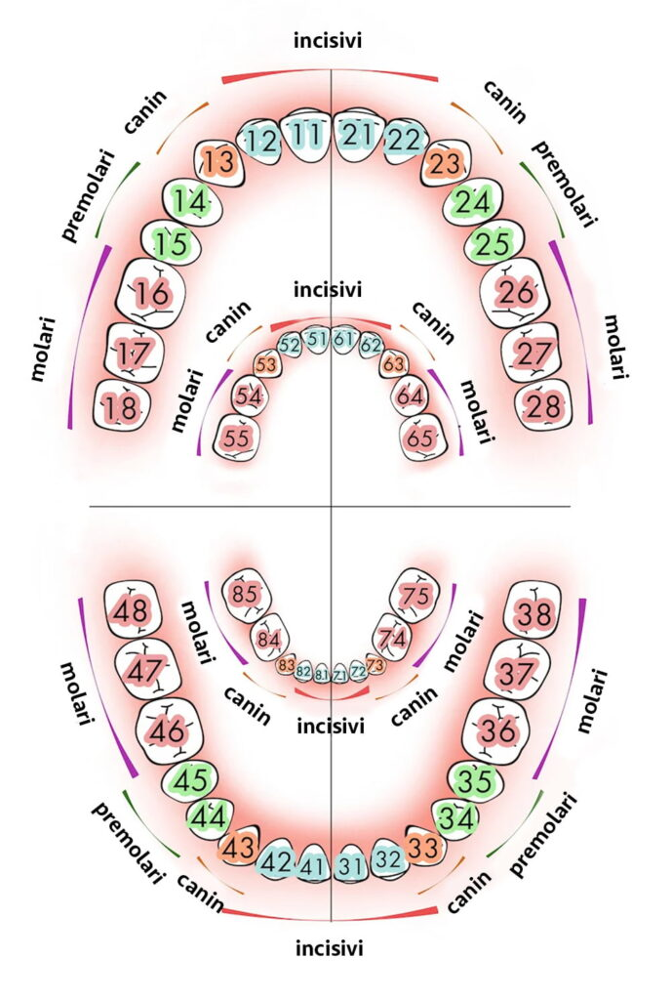

Bine ai venit!
Selectează o opțiune principală:
Test Complet – Sistemele de Notare
Întrebarea 1/10 | Scor: 0
Ce notație are acest dinte în sistemul ?
Test Finalizat!
Scorul tău final este: /10
Exercițiu de Completare - Harta Dentară
Completează codurile pentru fiecare dinte în funcție de sistemul ales. Respectă poziția anatomică.
1. Sistemul de notație FDI
(Federația Dentară Internațională)
Sistemul FDI este cel mai utilizat sistem de notație dentară la nivel internațional.
Fig 1. Schema cadranelor în sistemul FDI
Notația se bazează pe două cifre. Prima cifră indică cadranul dentar, iar a doua cifră indică poziția dintelui.
2. Sistemul Francez

3. Sistemul Unghiular

4. Sistemul Aritmetic

5. Sistemul American

6. Sistemul Palmer